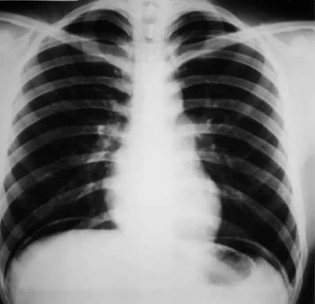
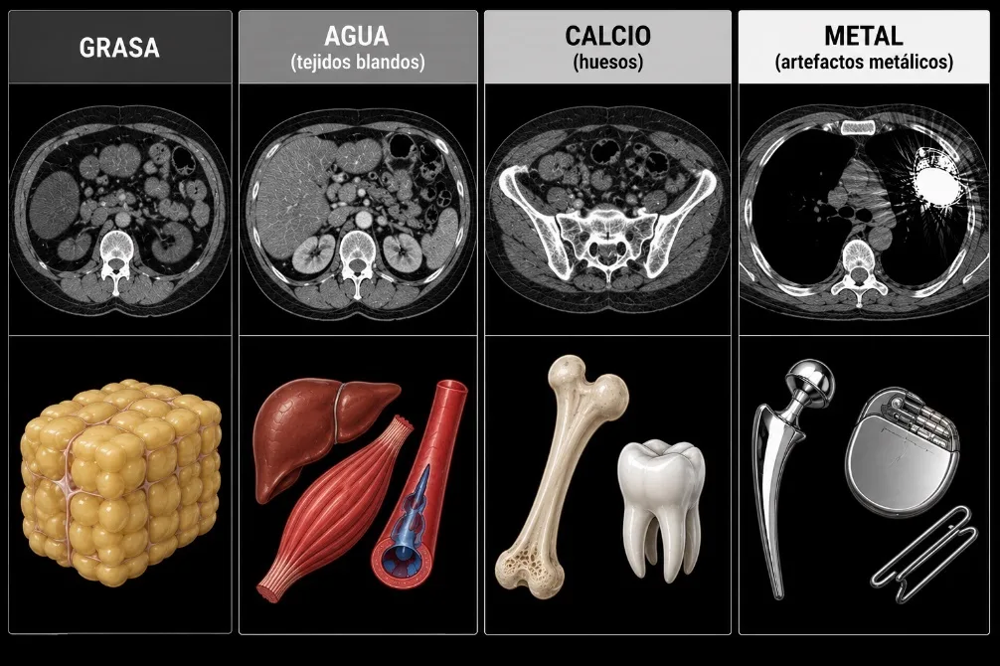

Estudios diagnósticos del sistema osteomioarticular (SOMA)
Diagnóstico de los trastornos musculoesqueléticos
Los trastornos musculoesqueléticos comprenden diversas afecciones que afectan a los huesos, las articulaciones,
los músculos y los tejidos conectivos. Estos trastornos pueden provocar dolor y pérdida de función, y se encuentran
entre las afecciones más incapacitantes y costosas.
Es un análisis de sangre que mide la rapidez con la que los glóbulos rojos se depositan en el fondo de un tubo de ensayo. Valores elevados pueden indicar la presencia de inflamación, infección o enfermedades autoinmunes.
Es una enzima presente principalmente en los músculos. Su aumento en la sangre puede indicar daño o destrucción muscular causada por lesiones, enfermedades musculares o ejercicio intenso. La CK se encuentra en el corazón, el cerebro, el músculo esquelético y otros tejidos; ante una lesión o daño muscular se liberan en sangre cantidades importantes de CK.
Son pruebas utilizadas para ayudar en el diagnóstico de la artritis reumatoide. La presencia de estos anticuerpos sugiere una respuesta anormal del sistema inmunitario contra las articulaciones.
Es un marcador genético relacionado con algunas enfermedades inflamatorias de las articulaciones, como la espondilitis anquilosante. Su función principal es ayudar al sistema inmune a reconocer microorganismos y diferenciarlos de nuestras propias células.
Emplea ondas sonoras de alta frecuencia para visualizar músculos, tendones, ligamentos y articulaciones sin radiación; el eco se procesa para formar la imagen.
Utiliza pequeñas cantidades de material radiactivo para detectar alteraciones en la actividad metabólica de los huesos, como fracturas ocultas, infecciones o tumores.
Combina rayos X y tecnología informática para obtener imágenes detalladas de huesos, músculos, grasa y órganos. Ofrece mayor detalle que las radiografías convencionales.
Procedimiento mediante el cual se extrae una pequeña muestra de tejido para ser analizada en el laboratorio y determinar la presencia de enfermedades, infecciones o tumores. Se realiza cuando se detectan áreas sospechosas o ante síntomas de ciertas afecciones; existen diferentes tipos de biopsias.
Registra la actividad eléctrica producida por los músculos para evaluar su funcionamiento y detectar enfermedades neuromusculares mediante electrodos que detectan las señales eléctricas.
Son las diferentes posiciones utilizadas para obtener imágenes radiológicas desde distintos ángulos, permitiendo una mejor evaluación de las estructuras anatómicas. Como: bloques y cuerdas de sujeción.
Estudios radiológicos de los trastornos musculoesqueléticos
Son técnicas de diagnóstico por imágenes utilizadas para evaluar enfermedades, traumatismos y el desgaste natural
de huesos, articulaciones, músculos, tendones y ligamentos. Permiten a los médicos confirmar lesiones (fracturas,
esguinces) y enfermedades degenerativas como artritis y artrosis.
Densidades básicas
Aire (negro): la menor absorción de rayos X (aire de los pulmones, gas intestinal).
Grasa (gris): absorbe algo más de radiación (en abdomen, rodeando las vísceras).
Agua (gris claro): mayor absorción (vísceras, músculos, vasos).
Calcio (blanco claro): gran absorción (huesos, tejidos calcificados).
Metal (blanco brillante): no existe en el organismo de forma natural (artefactos, marcapasos, contrastes, grapas).

IMG/soma/densidades-aire.webp

IMG/soma/densidades-metal.webp
Técnica de lectura: ABC'S
A
Alineación
Evalúa la posición y organización normal de los huesos y articulaciones.
B
Bone (hueso)
Analiza el tamaño, forma, densidad e integridad de los huesos.
C
Cartilage (cartílago)
Examina los espacios articulares y el estado del cartílago.
S
Soft tissues
Valora músculos, tendones, ligamentos y otros tejidos blandos que rodean las estructuras óseas.
Signos radiológicos de patología
Tamaño: identifica alteraciones por aumento o disminución del tamaño normal de los huesos por malformaciones, enfermedades o traumatismos.
Forma: evalúa deformidades, curvaturas, angulaciones y fracturas que modifican la estructura normal del hueso.
Densidad: analiza la cantidad de mineral del hueso; puede estar disminuida (osteopenia u osteoporosis) o aumentada (osteoesclerosis).
Número: determina la presencia de huesos ausentes, incompletos o adicionales respecto a la anatomía normal.
Semiología de las partes blandas
Densidad
Materiales o estructuras anormales en los tejidos blandos:
•Calcificaciones: depósitos anormales de calcio.
•Osificaciones: formación de tejido óseo fuera del esqueleto.
•Cuerpos extraños: objetos ajenos al organismo visibles en las imágenes.
Tamaño
Cambios en el volumen de los tejidos blandos:
•Hipertrofia: aumento de tamaño por uso excesivo, inflamación o aumento de la vascularización.
•Atrofia: disminución de tamaño por desuso, inmovilización o daño nervioso.
Exámenes diagnósticos para trastornos del SOMA
El sistema osteomioarticular es el conjunto de estructuras del cuerpo humano que incluye los huesos, los músculos y
las articulaciones, junto con los tejidos que los unen y protegen (tendones, ligamentos y cartílagos). Funciona de
manera integrada para permitir el movimiento, mantener la postura, dar soporte al cuerpo y proteger los órganos
internos. Los huesos forman la estructura rígida, los músculos generan la fuerza mediante su contracción y las
articulaciones permiten la unión y movilidad entre los huesos.
Densitometría ósea
Es un examen de diagnóstico por imágenes que mide la densidad mineral de los huesos (cantidad de minerales,
principalmente calcio). Se realiza mediante absorciometría de rayos X de energía dual (DEXA o DXA), con dosis muy
bajas de radiación. Es el método más preciso y confiable para detectar la pérdida de masa ósea, diagnosticar
osteopenia y osteoporosis y valorar el riesgo de fracturas; generalmente se examinan la columna lumbar y la cadera.
Es una prueba rápida, indolora, no invasiva y segura.
¿Para qué sirve?
•Detectar la pérdida de masa ósea en etapas tempranas.
•Diagnosticar osteopenia y osteoporosis.
•Evaluar el riesgo de fracturas óseas.
•Monitorear la evolución de pacientes con enfermedades óseas.
•Determinar la eficacia del tratamiento para la osteoporosis.
•Identificar alteraciones en personas con factores de riesgo (menopausia, envejecimiento, antecedentes familiares o uso prolongado de corticosteroides).
Procedimiento
El paciente es recibido y se le explica el procedimiento.
Se le solicita retirar objetos metálicos (joyas, cinturones o prendas con cremalleras).
El paciente se acuesta sobre una mesa especial del equipo de densitometría.
Un brazo del aparato se desplaza lentamente sobre las áreas a evaluar (columna lumbar y cadera).
El equipo emite una cantidad mínima de rayos X y registra las imágenes.
El paciente debe permanecer inmóvil para obtener resultados precisos.
Una computadora procesa las imágenes y calcula la densidad mineral ósea.
El examen dura entre 10 y 30 minutos y no produce dolor ni molestias.
Intervenciones de enfermería
Antes
Verificar identidad y orden médica, explicar el examen y su finalidad, indagar embarazo (usa rayos X), recomendar evitar suplementos de calcio 24 h antes, confirmar estudios recientes con contraste o medicina nuclear, retirar objetos metálicos y brindar apoyo emocional.
Durante
Colaborar en la correcta colocación del paciente, indicar la importancia de permanecer inmóvil, vigilar su estado general, dar comodidad y seguridad, y apoyar ante ansiedad o temor.
Después
Informar que puede retomar sus actividades y alimentación habitual, orientar sobre la interpretación de resultados, registrar el examen y educar sobre salud ósea (calcio, vitamina D, ejercicio, evitar tabaco/alcohol y prevenir caídas).
Electromiografía (EMG)
La electromiografía (EMG) es un estudio diagnóstico que evalúa el funcionamiento de los músculos y los nervios que
los controlan, registrando la actividad eléctrica que producen los músculos en reposo y durante la contracción.
Generalmente se realiza junto con los estudios de conducción nerviosa, que miden la velocidad y capacidad con la
que los nervios transmiten los impulsos eléctricos.
Procedimiento
El paciente se coloca en una posición cómoda.
Se limpian las zonas a estudiar.
Se colocan electrodos sobre la piel para evaluar la conducción nerviosa.
Se introducen agujas finas en determinados músculos.
Se registran las señales eléctricas musculares.
El especialista interpreta los resultados obtenidos.
¿Para qué sirve?
•Diagnosticar enfermedades musculares y nerviosas.
•Detectar lesiones o compresiones nerviosas.
•Evaluar debilidad muscular, hormigueo o pérdida de sensibilidad.
•Diagnosticar síndrome del túnel carpiano, neuropatías, radiculopatías y miopatías.
•Determinar la localización y gravedad del daño nervioso.
•Monitorear la evolución de enfermedades neuromusculares.
Intervenciones de enfermería
Antes
Verificar identidad y orden médica, explicar el examen y las molestias leves, indicar acudir con la piel limpia y sin cremas, investigar trastornos hemorrágicos, uso de anticoagulantes o marcapasos, y brindar apoyo emocional.
Durante
Colocar al paciente en posición cómoda, proporcionar tranquilidad, vigilar su tolerancia (dolor o malestar), colaborar con el especialista y mantener asepsia y bioseguridad.
Después
Evaluar dolor, sangrado o hematomas en las zonas de inserción, informar que las molestias leves son temporales, recomendar reanudar actividades, aplicar compresas frías si es necesario, vigilar signos de infección y registrar el procedimiento.